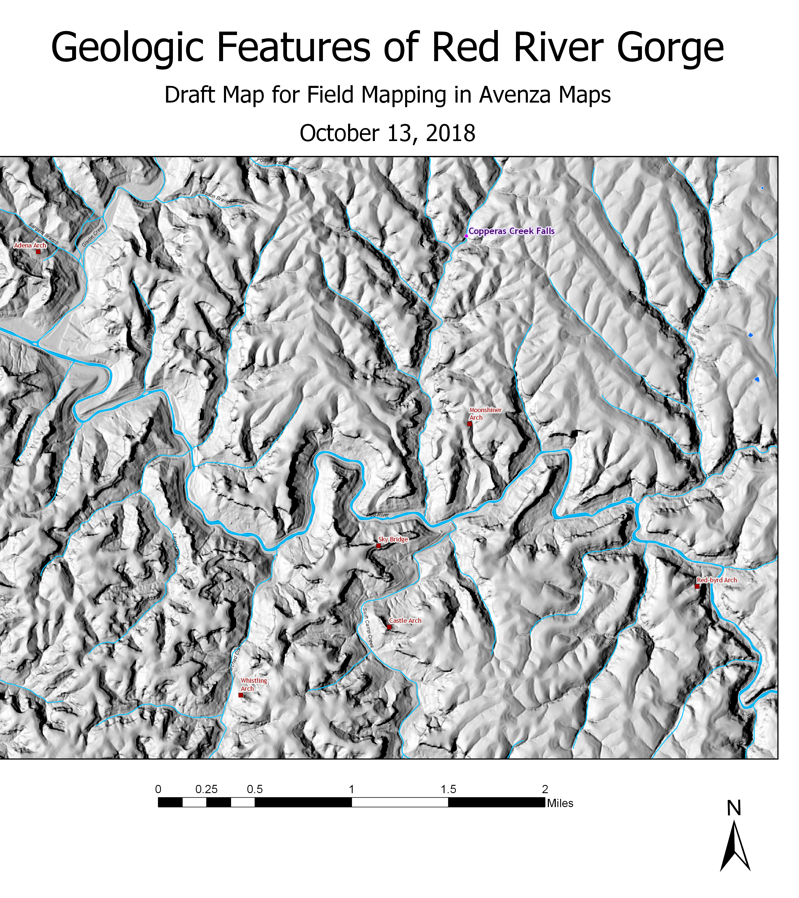

Red River Gorge: a place of beauty
A Natural Wonderland
Red River Gorge is full of interesting geological features, trails to awe-inspiring overlooks, and delightful waterfalls. Copperas Creek Falls is a relatively easy hike up an unofficial trail, and worth a visit.

An interesting feature on the trail along Copperas Creek, photo by Zina Merkin
The Site Visit
Before going to the site, I built a simple base map in ArcGIS Pro, exporting it as a Geospatial PDF file. This was loaded into an online application, Avenza maps. This can be accessed on a smart phone and was used to take a location point when I arrived at my chosen location, Copperas Creek Falls.This is an image of the map -- you can download the Geospatial PDF here.

The waterfall in pictures
Approaching the falls on Copperas Creek is deceptive -- you can hear it before you can see it. The creek turns to the right while the trail goes to the left, up a small rise. There in the distance, through the rhododendron leaves, you can see the falls pouring over the rocky edge, but you can't see how tall it is.

First approach to Copperas Falls, a glimpse
Indian Fort Mountain is located in Berea, Kentucky and is managed by Berea College's College of Forestry and is part of the larger Berea College Forest, one of oldest private forests in Kentucky. It was established in 1898. The trails are open to the public foot traffic but no camping is allowed.
Some notable destinations include the Indian Fort Lookout, East Pinnacle, Buzzard's Roost, Basin Mountain, and West Pinnacle. Elevation relief on the trail network is 700 vertical feet. 7.6 miles of trail exist here.
Coming a little closer, its height is more apparent.

Most of the falls is in view
More about Me!
- See my projects on GitHub: Zina's GIS Experiments
- Follow me on LinkedIn: zrm4landscape